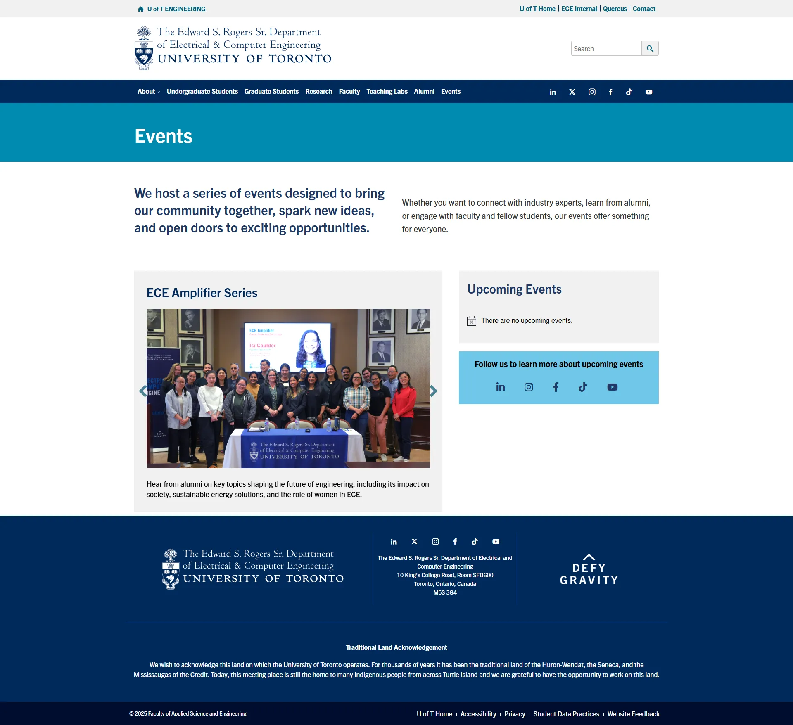
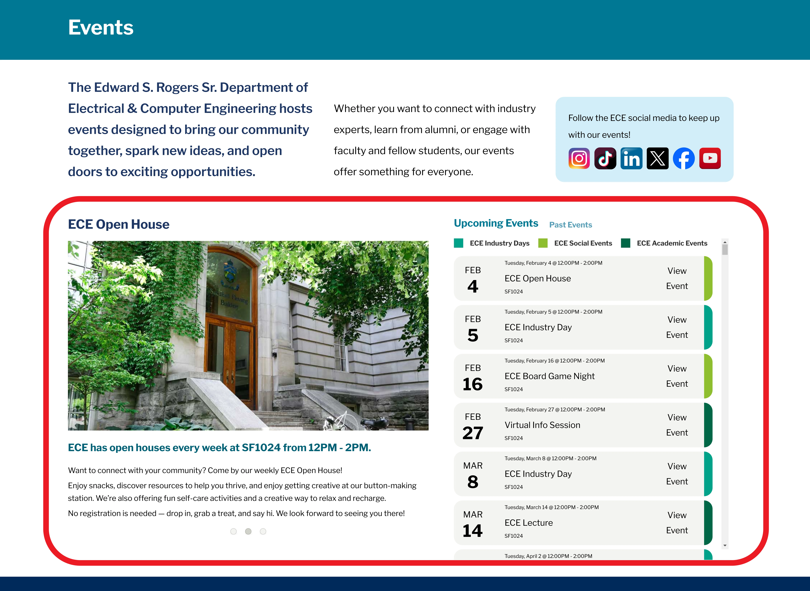
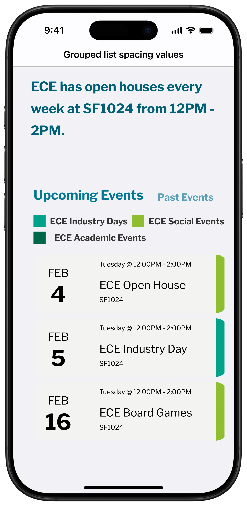
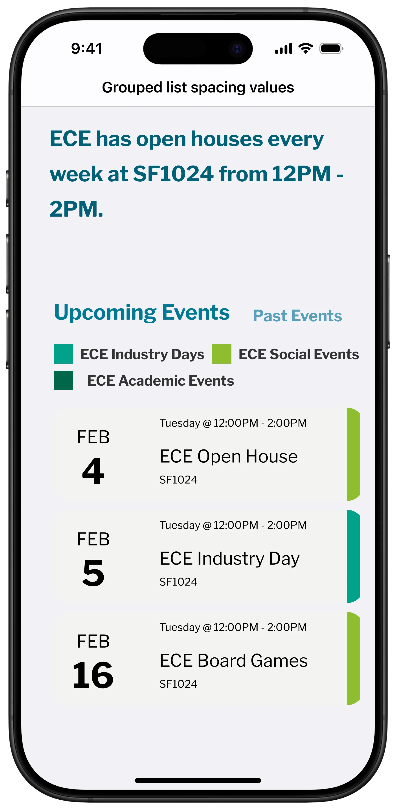
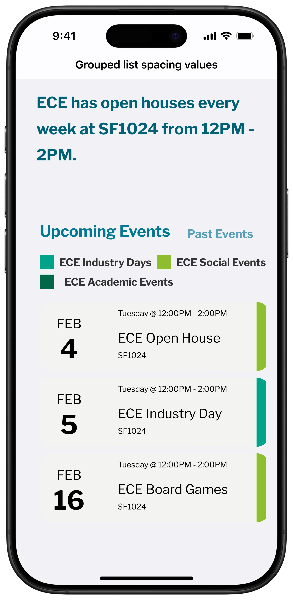

D
E
S
I
G
N
P
R
O
C
E
S
S
Step 1: Research & Mockups
I began with a short content audit of the existing events page and explored how other U of T departments presented similar information. Based on this and my own design knowledge, I designed a mockup that proposed room for broad event descriptions, and a calendar widget.
My focus was on layout and visual cues.
.webp)
Step 2: WordPress Development
Once development began, I realized the calendar design was visually polished but too advanced for the widget available.
Creating a custom-coded calendar or sourcing a new plugin was possible. However, that was not the goal of this project. It was to
Deliver an improved layout.
I revised the approach to keep the existing widget and instead focused on improving the surrounding layout to make the events easier to understand and share.

Step 3: Mobile Layout and Responsiveness
Many students would open event links from social media apps. I needed to ensure the page worked well on mobile and was easy to scan.
I structured the layout into two modular content blocks. One block held the broader event descriptions. The other held the calendar widget. Fortunately, this was accounted for in my original mockup.
On desktop, these appear side by side. On mobile, they stack vertically for ease of navigation.

.webp) 

